Galeria de fotos
- 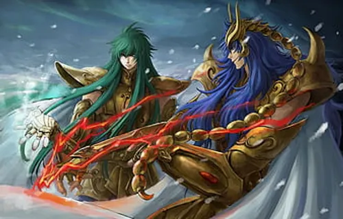
- 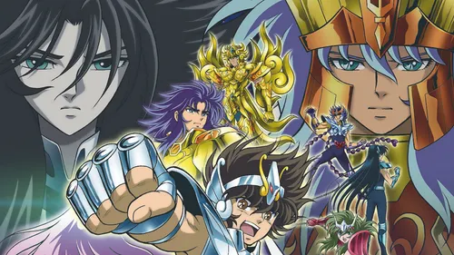


Los Caballeros del Zodiaco(聖闘士星矢) nació como un manga creado por Masami Kurumada y publicado por primera vez en la revista Weekly Shōnen Jump el 3 de diciembre de 1985. Su estilo mezclaba acción, mitología griega y valores como la amistad y la perseverancia, algo que era muy poco habitual en los comics de la época. El manga tuvo tal éxito que se crearon un total de 28 volúmenes, convirtiéndose en uno de los más populares de los años 80.
Gracias a su éxito, el estudio Toei Animation produjo su adaptación al anime y el primer episodio se emitió en Japón el 11 de octibre de 1986. La serie llegó a los 114 capítulos y se extendió hasta el año 1989 creando tres sagas; El torneo Galáctico, las Doce Casas del Zodiaco y la Batalla Contra Poseidón.
A España la serie llegó de la mano de Telecinco en 1990 y rápidamente se convirtió en un fenómeno en la época.
Su popularidad continuó durante los años 90 con la emisión de las películas animadas y, más tarde, con nuevas sagas como Saint Seiya: Hades (2002), Lost Canvas (2009) y Soul of Gold (2015), que expandieron su universo. Además, el manga ha tenido múltiples continuaciones y adaptaciones, consolidando a Saint Seiya como uno de los pilares del anime clásico junto a series como Dragon Ball y Ranma ½.
Hoy en día, Los Caballeros del Zodiaco sigue siendo un símbolo del anime japonés en occidente. Sus personajes, su música y sus batallas siguen despertando nostalgia y admiración en varias generaciones de fans alrededor del mundo.
| Caballero | Constelación | Armadura |
|---|---|---|
Seiya
|
Pegaso
|
Armadura de Pegaso
|
|
Shiryu 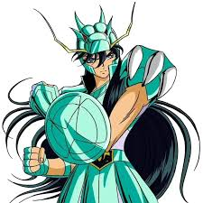 |
Dragón 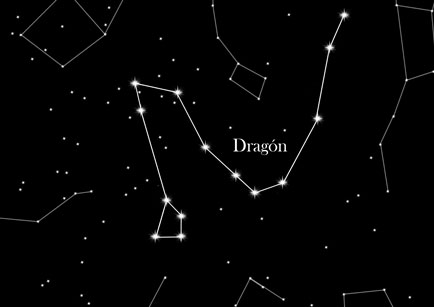 |
Armadura del Dragón 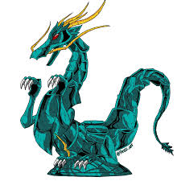 |
|
Hyoga 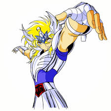 |
Cisne 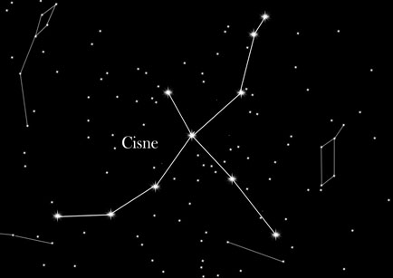 |
Armadura del Cisne 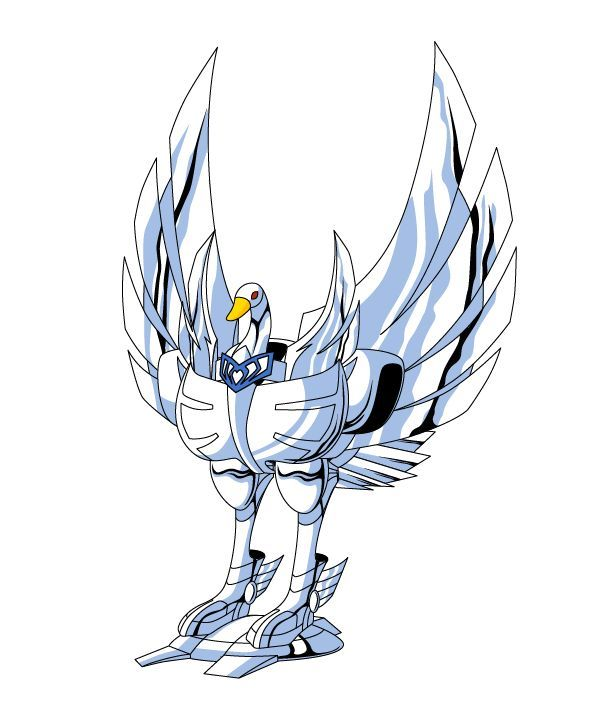 |
|
Shun 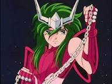 |
Andrómeda 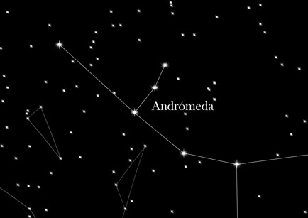 |
Armadura de Andrómeda 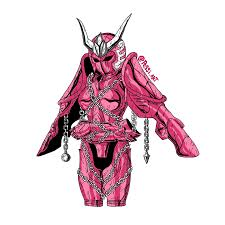 |
|
Ikki 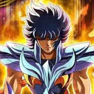 |
Fénix 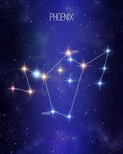 |
Armadura del Fénix 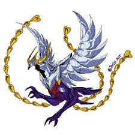 |